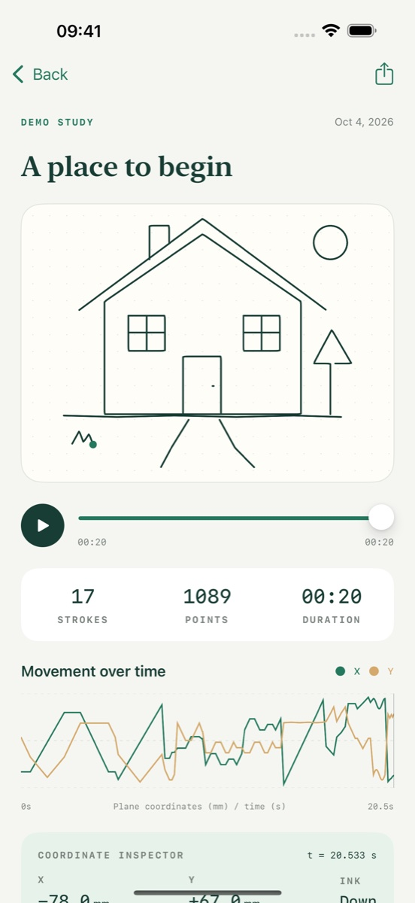

Start with your pen.
Photograph your pen on a plain table and confirm its outline and writing end. The saved reference helps the app follow that pen as you draw.
YOUR PEN. YOUR PAPER. YOUR CAMERA.
Follow your pen with an iPhone or iPad camera. See connected strokes over the camera view, then save the drawing and the movement that made it.

FROM A PEN TO A PATH
Photograph your pen on a plain table and confirm its outline and writing end. The saved reference helps the app follow that pen as you draw.
Save connected strokes in Sketchbook. Scrub through the replay and inspect timestamped points and estimated drawing coordinates.
Export PNG or SVG drawings and CSV or JSON coordinates. Paper calibration maps strokes onto a rectangular page for export.
A LITTLE SETUP GOES A LONG WAY
Use good light, a contrasting background, and a visible pen tip. Keep the paper still and switch between Ink on and Pen lifted to separate strokes.
Live capture requires iOS or iPadOS 17 or later, an ARKit-capable device, and camera permission. Tracking and coordinates are estimates; results depend on visibility, motion, and calibration. Handwriting is saved as strokes, not converted to typed text.
Get setup and tracking helpYOUR DRAWING, UNDER YOUR CONTROL
The app has no accounts, ads, or third-party analytics. You choose when and where to export your sketches.